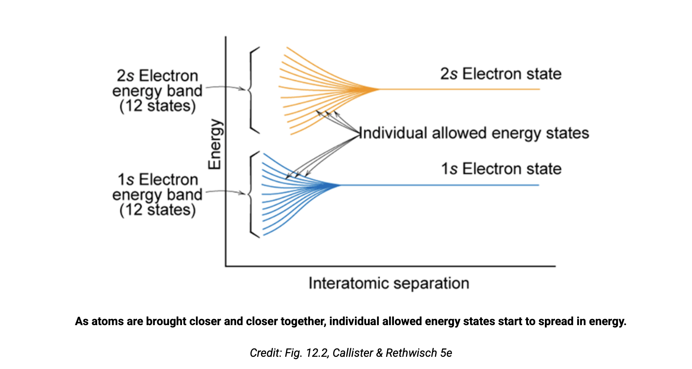
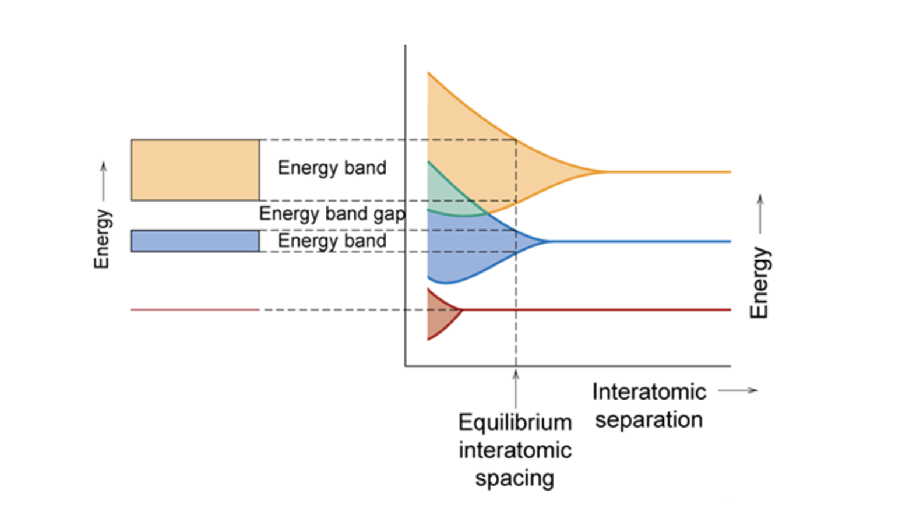
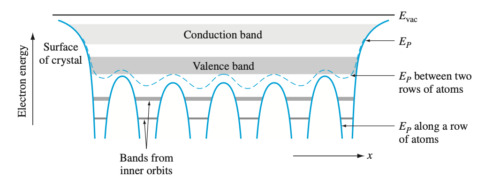

Band Theory of Solids¶
The Big Picture: Three Types of Electrons in a Metal¶
Starting assumptions: Perfect crystal lattice at T = 0 K, ignoring electron-electron interactions.
At this idealized starting point, electrons are delocalized Bloch waves filling energy levels according to Fermi statistics. Each electron has a k-vector and is equally likely to be found anywhere in the crystal.
But the fun starts when we relax these assumptions! Add temperature → lattice vibrations (phonons). Add defects → imperfections break periodicity. Add external E fields → electrons accelerate. These perturbations cause scattering, decoherence, and localization - transforming perfect Bloch waves into wave packets that move, scatter, and conduct. This is where real metal behavior emerges.
Three Tiers of Electrons¶
1. Core electrons (1s, 2s, etc.) - Stuck to their ions - Tightly bound near the nucleus with very little coupling between neighboring ions - Their energy bands are extremely narrow (little orbital overlap) - With any imperfection or temperature, these narrow bands can't sustain coherent Bloch waves across the crystal - They localize into standard atomic orbitals around individual ions - Don't participate in conduction or bonding
2. Deep valence electrons - The glue - Their orbitals overlap significantly between ions (wider energy bands) - Form delocalized Bloch waves well below the Fermi level - Few adjacent empty states → rarely scatter → stay Bloch-like - Provide the bonding "glue" holding the crystal together, but don't conduct
3. Conduction electrons (near Fermi level) - The main players - Have many adjacent empty energy states - At T > 0: Fermi distribution spreads → some electrons thermally excited to higher energies - These Bloch waves scatter/interact with lattice vibrations (phonons), defects, and other electrons - Scattering causes decoherence: superposition of multiple Bloch waves with incoherent phases - Decoherence → localization into wave packets (not single-k Bloch waves) - Wave packets move through crystal, scatter, change direction/shape, gradually spread out (become more Bloch-like) until next scattering event - Responsible for electrical and thermal conduction - they can shift to higher energy states and absorb energy
What determines conductivity? The time between collisions (scattering time τ).
- In an external E field, electrons accelerate and drift in the field direction
- Scattering → decoherence → localized wave packets: Immediately after a collision, electrons are localized (superposition of Bloch states with random phases)
- Between collisions → spreading → Bloch-like: As the wave packet propagates freely, it gradually spreads out and becomes more extended/delocalized, approaching Bloch character again
- Next collision → re-localizes: Another scattering event resets the cycle, localizing the electron again and randomizing its direction
- Shorter τ (frequent scattering) → electrons stay localized, randomize direction often → lower conductivity
- Longer τ (rare scattering) → electrons spend more time in extended Bloch-like state, maintain drift longer → higher conductivity
- Without scattering (τ → ∞), conductivity would be infinite - electrons would remain as perfect extended Bloch waves and accelerate indefinitely
Key insight: The electrons that conduct are those near the Fermi level with accessible empty states. Lower energy electrons stay Bloch-like but don't move. Core electrons are atomically localized and irrelevant for transport.
Energy Bands: From Isolated Atoms to Solids¶
When atoms are brought together to form a solid, their discrete electron energy levels transform into continuous energy bands.
Two ways to understand band formation:
• Bottom-up (orbital splitting): Start with isolated atomic orbitals. As atoms approach for covalent bonding, orbitals overlap and split into N states for N atoms. These merge into continuous bands.
• Top-down (Bloch theory): Solve the Schrödinger equation for electrons in a periodic crystal potential. The solutions are Bloch waves, and allowed energies naturally form bands separated by gaps.
Energy Level Spreading¶
As atoms approach each other, their electron orbitals begin to overlap. This causes each discrete atomic energy level to split into multiple closely-spaced states.

Figure 1 [1]: As atoms are brought closer together, individual allowed energy states start to spread in energy. The 1s and 2s electron states each split into 12 states (for 12 atoms), forming the beginning of energy bands.
Band Formation at Equilibrium Spacing¶
At the equilibrium interatomic spacing in a solid, these closely-spaced states merge into continuous energy bands, separated by band gaps where no electron states exist.

Figure 2 [1]: At equilibrium interatomic spacing in a solid, the spread states form continuous energy bands. Band gaps appear between bands - energy ranges where no electron states are allowed.
Bands in Real Space¶
In the bulk of a crystal, electrons occupy states within bands. The energy varies with position, creating potential wells at atomic sites.

Figure 3 [2]: Conduction and valence bands in a crystal showing spatial variation. The periodic potential creates wells at atomic sites. Note how the energy levels vary between rows of atoms and along rows.
Bloch Theorem: Electrons in Periodic Crystals¶
To understand electron behavior quantitatively, we solve the Schrödinger equation for a periodic potential extending throughout an infinite crystal.
Bloch's theorem states that electron wavefunctions in a periodic crystal have the form:
where:
- \(U_K(x)\) has the same periodicity as the crystal lattice
- \(e^{iKx}\) is a plane wave with wavevector K
- The wavefunction is a plane wave modulated by the crystal periodicity
This is the stationary state (time-independent part). A stationary state has a single definite energy E. The complete time-dependent wavefunction is:
The probability density \(|\Psi|^2\) doesn't change with time - hence "stationary."
Key properties:
-
Symmetry: \(E(K) = E(-K)\) - energy is the same for ±K (forward and backward traveling waves)
-
Periodicity: \(E(K) = E(K + \frac{2\pi n}{a})\) - adding \(2\pi/a\) to K gives the same energy (physically equivalent states)
For 3D crystals:
where \(|\vec{K}| = 2\pi/\lambda\) connects the wavevector magnitude to the de Broglie wavelength.
Brillouin Zones and the Reduced Zone Scheme¶
The first Brillouin zone spans \(K \in [-\pi/a, \pi/a]\) and contains all distinct k-values - a complete set of unique solutions. K-values outside this range simply duplicate solutions inside.
Solving for the Dispersion Relation: E-k Diagrams¶
When you solve the Schrödinger equation for a periodic potential using the Bloch wavefunction form, you obtain the dispersion relation E(K) - how energy depends on wavevector K.
The result is the E-k diagram, which reveals the full band structure:

Figure 4 [3]: Reduced-zone representation of allowed E-k states in a one-dimensional crystal. Solving Schrödinger's equation with Bloch wavefunctions gives these dispersion curves - four energy bands separated by band gaps. Each band contains a continuum of allowed k-states between -π/(a+b) and π/(a+b).
Connecting k, momentum, and energy:
| Property | Free Electron | Electron in Crystal (Bloch) |
|---|---|---|
| Wavefunction | \(\psi = Ae^{i(kx-\omega t)}\) | \(\psi = U_K(x)e^{i(Kx-\omega t)}\) |
| Spatial part | Plane wave \(e^{ikx}\) | Bloch wave \(U_K(x)e^{iKx}\) |
| Wavenumber | \(k = \frac{2\pi}{\lambda}\) | \(K = \frac{2\pi}{\lambda}\) (crystal momentum) |
| Frequency | \(\omega = \frac{E}{\hbar}\) | \(\omega = \frac{E}{\hbar}\) |
| Momentum | \(p = \hbar k\) | \(\hbar K\) (crystal momentum, not actual) |
| Energy | \(E = \frac{\hbar^2 k^2}{2m}\) | \(E = E_0 + \frac{\hbar^2 K^2}{2m_0}\) (near band minimum, where \(E_0\) is band edge at K=0) |
| Velocity | \(v = \frac{\hbar k}{m}\) | \(v = \frac{1}{\hbar}\frac{dE}{dK}\) (group velocity) |
Why does energy increase with momentum for free electrons?
For a free particle: \(E = \frac{p^2}{2m} = \frac{\hbar^2 k^2}{2m}\)
- Since \(p = \hbar k\), momentum is directly proportional to k
- As energy increases: E ↑ → ω ↑ → p ↑ → k ↑ → λ ↓ (shorter wavelength, since λ = 2π/k)
- E ∝ k² is a parabola: higher k always means higher energy (monotonic)
- Higher energy → higher k → shorter wavelength → more localized
Mass dependence: For the same energy E, solving \(k = \sqrt{2mE/\hbar^2}\) shows lighter particles (electrons) have smaller k → larger wavelength λ = 2π/k. A light particle doesn't need much momentum to achieve a given kinetic energy, so it has a longer wavelength. Longer wavelengths are harder to confine spatially (try fitting a long wave into a small box!), making light particles naturally more delocalized than heavy ones at the same energy.
Does this happen in crystals?
Not always! Near band edges, the E-k curve bends backward - higher |K| can mean lower E. At zone boundaries (K = ±π/a), electrons form standing waves (Bragg reflection) rather than propagating, with dE/dK = 0. This non-monotonic behavior is unique to crystals and creates band gaps.
Group Velocity: How Fast Do Electrons Move?¶
The electron velocity is given by the group velocity:
This is the slope of the E-K curve!
- Flat bands (small dE/dK) → slow electrons
- Steep bands (large dE/dK) → fast electrons
- At band edges, dE/dK = 0 → electrons have zero velocity (standing waves at Brillouin zone boundaries)
References¶
[1] "Energy bands and band gaps," Pennsylvania State University, Materials Science and Engineering. [Online]. Available: https://courses.ems.psu.edu/matse81/node/2227
[2] B. L. Anderson and R. Anderson, Fundamentals of Semiconductor Devices, 2nd ed. McGraw-Hill Education.
[3] R. F. Pierret, Advanced Semiconductor Fundamentals, 2nd ed., vol. VI, Modular Series on Solid State Devices. Upper Saddle River, NJ: Prentice Hall, 2003.